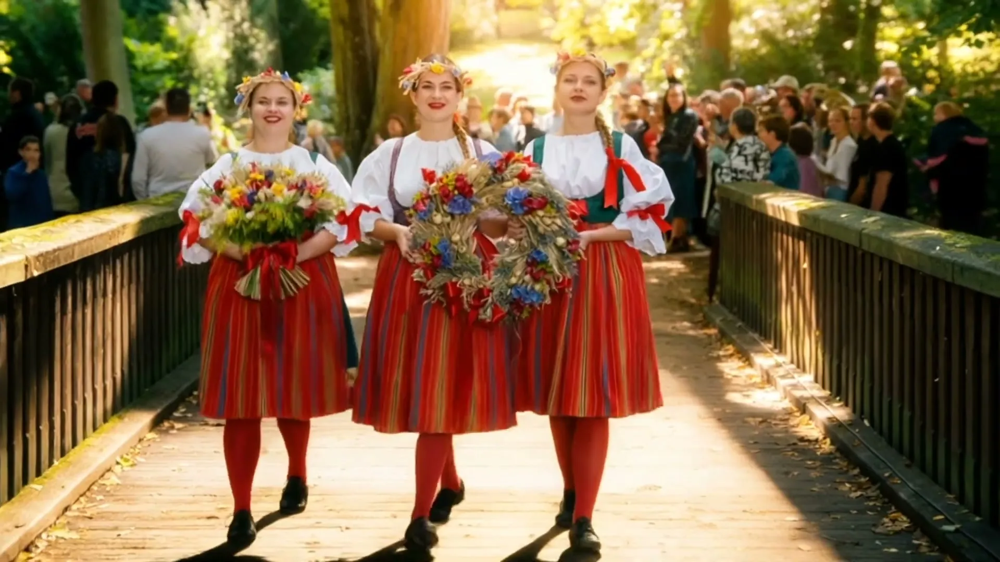

Vizualizace
Produkt, který ještě neexistuje, nebo místo, které se teprve postaví. Ukážete ho dřív, než bude hotový.
Generované obrazy a videa pro koncepty, vizualizace a kampaně. Hodí se tam, kde by klasické natáčení bylo moc drahé, pomalé nebo úplně nemožné.

Produkt, který ještě neexistuje, nebo místo, které se teprve postaví. Ukážete ho dřív, než bude hotový.
Rychle ukážeme několik směrů a vy vyberete ten správný, ještě než se cokoli natočí.
Prostředí a scény, kam by se štáb nedostal nebo kam by se nevyplatilo jet.
Generované pozadí, rozšíření záběru nebo efekt v reálném videu. AI doplní to, co jsme natočili.
Všechny záběry v tomto videu vytvořila AI. Žádný z nich se nenatáčel.
Od prvního telefonu po hotový výstup. Víte, co bude následovat.
Řeknete, co má obraz nebo video ukázat a kde se použije.
Připravíme několik variant, ať je z čeho vybírat.
Vybranou variantu dotáhneme do detailu a sladíme s vaší značkou.
Retuš, střih, barvy a export ve formátech, které potřebujete.
Generování je jen jeden krok. Výstup prochází rukama fotografa a střihače, takže drží styl, barvy a kvalitu zbytku vaší komunikace.
Napište nám, co potřebujete. Ozveme se s nápadem a cenou.